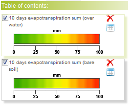

to delete the selected dataset from your list;
to delete the selected dataset from your list; to export the map as a PDF file;
to export the map as a PDF file;
All loaded datasets will added on the "Table of Contents" section, each with its individual legend:

For each layer, click on:
to delete the selected dataset from your list; to export the map as a PDF file;